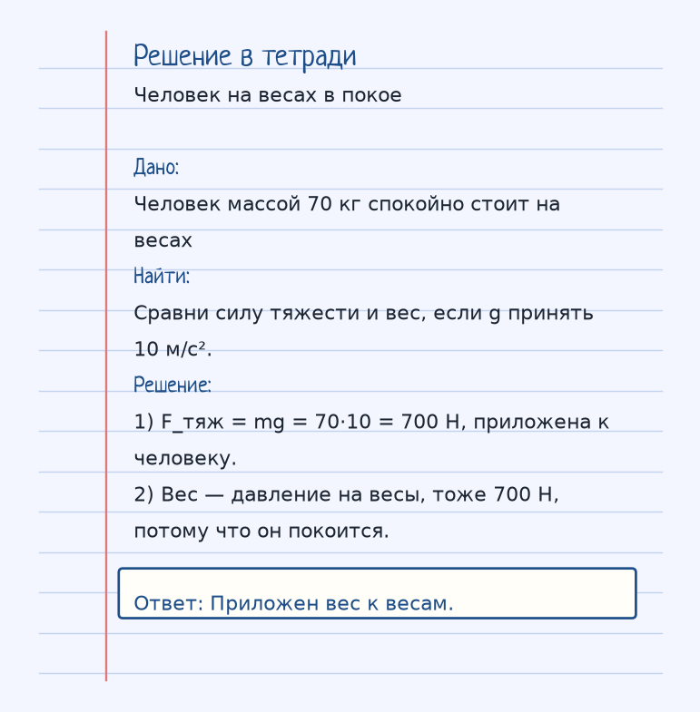
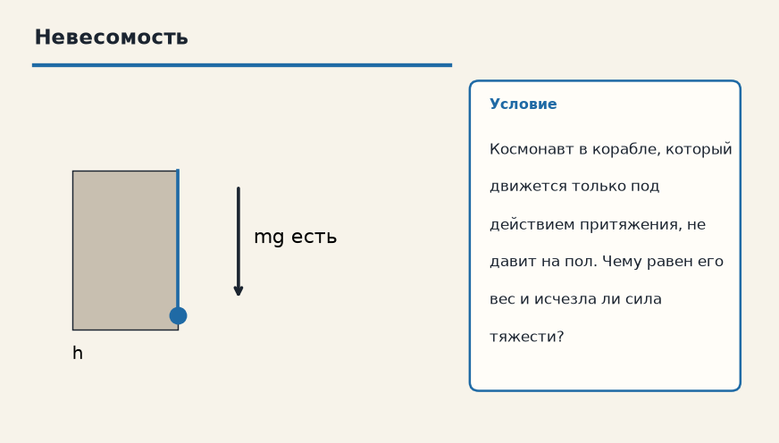

Держи картинку, не строчку. Если можешь показать рукой, куда едет тело и что его толкает, формула уже почти твоя. Ниже — как устроена тема «Сила тяжести и вес», где обычно спотыкаются, и два разбора до ответа.
Показ к теме. Это условие, не шпаргалка.
Сначала смысл
Сила тяжести — это притяжение Земли (F_тяж = mg). Она приложена к телу. Вес — это сила, с которой тело давит на опору (или растягивает подвес). Она приложена к опоре. Вес равен силе тяжести, только если тело покоится или движется равномерно.
Сила тяжести F_тяж = mg — это притяжение Земли. Она приложена к самому телу и тянет его вниз.
Вес — другая сила: ею тело давит на опору или растягивает подвес. Вес приложен к опоре, а не к телу. На весах стрелка показывает как раз вес: силу давления ног на платформу.
Пока тело покоится или едет равномерно, вес по модулю равен силе тяжести. В лифте, который разгоняется, равенство ломается: при перегрузке вес больше mg, а в невесомости, когда опора уходит из-под тела вместе с ним, вес равен нулю, хотя притяжение Земли никуда не делось.
Как решать. Выпиши величины с рисунка к примеру «Человек на весах в покое». Условие: Человек массой 70 кг спокойно стоит на весах. Сравни силу тяжести и вес, если g принять 10 м/с². Дальше подставляй их в формулу этой темы и сверяй шаги с решением под картинкой — оно закрыто, пока не попробуешь сам. Второй рисунок, «Невесомость», тот же приём на других данных: Космонавт в корабле, который движется только под действием притяжения, не давит на пол. Чему равен его вес и исчезла ли сила тяжести? Если оба примера сходятся, тему можно нести на контрольную.
Как читать формулу
F_тяж = mg приложена к телу. Вес приложен к опоре или подвесу. Они равны только в покое или при равномерном движении.
Чтобы осталось в голове
Ты стоишь на весах. Твой вес (70 кгс) — это сила, с которой ты давишь на весы. А сила тяжести (тоже 70 кгс) — это Земля тянет тебя вниз.
На весах твои 70 кгс — это давление на платформу. Столько же Земля тянет тебя вниз, но это уже сила тяжести, приложенная к тебе.
Где обычно спотыкаются
Самая частая ошибка школьников — путать вес и силу тяжести. Вес может быть больше (перегрузка) или равен нулю (невесомость).
Самая частая ошибка — считать вес и силу тяжести одной стрелкой. Вес может быть больше mg (перегрузка) и равен нулю (невесомость).
Дальше две задачи. Сначала схема. Когда сам набросаешь ход, открой тетрадь — там дано, перевод в СИ, шаги и ответ в рамке.
Разбор 1
Человек на весах в покое
Человек массой 70 кг спокойно стоит на весах. Сравни силу тяжести и вес, если g принять 10 м/с².
На схеме только условие. Ответа там нет — его ещё надо получить.
Смотри на порядок, не на красивое число: сначала единицы, потом формула, потом ответ.
Дано. Человек массой 70 кг спокойно стоит на весах
В СИ.
Найти. Сравни силу тяжести и вес, если g принять 10 м/с².
Решение.
F_тяж = mg = 70·10 = 700 Н, приложена к человеку.
Вес — давление на весы, тоже 700 Н, потому что он покоится.
Приложен вес к весам.

Разбор 2
Невесомость
Космонавт в корабле, который движется только под действием притяжения, не давит на пол. Чему равен его вес и исчезла ли сила тяжести?

На схеме только условие. Ответа там нет — его ещё надо получить.
Смотри на порядок, не на красивое число: сначала единицы, потом формула, потом ответ.
Дано. Космонавт в корабле, который движется только под действием притяжения, не давит на пол
В СИ.
Найти. Чему равен его вес и исчезла ли сила тяжести?
Решение.
Вес равен нулю: давить на опору нечем, опора сама падает вместе с ним.
Сила тяжести остаётся — именно она искривляет движение.